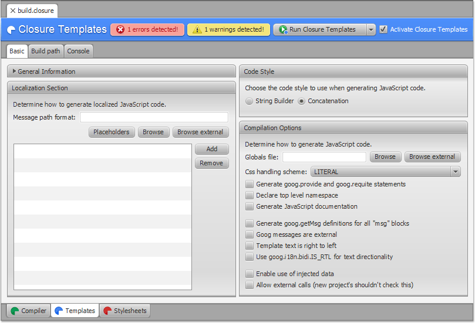
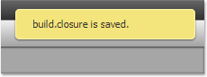

Closure FX Builder is an IDE agnostic application and allows you
to use your favorite development framework or editor. Therefore,
your project can have any structure and dependencies.
To
start using Closure FX Builder in your project, create file with
.closure extension at the root directory of
your application.
- Inside Closure FX Builder click the New button.
Default Closure Build Configuration will be created.
Click Activate Closure Templates to
activate the compiler.

- On the toolbar click Save button or use Ctrl+S (Windows,
Unix) or Cmd+S (Mac OS) shortcut to save the configuration.
Save
the newly created configuration in the root folder of your
project, so the builder will have access to all project's
directories and files.
The best practise is calling Closure Build Configuration as a build.closure. Nevertheless, you can use
any other name.
- Notice the message at the top-right corner. The messages
indicates that the configuration is saved successfully.
